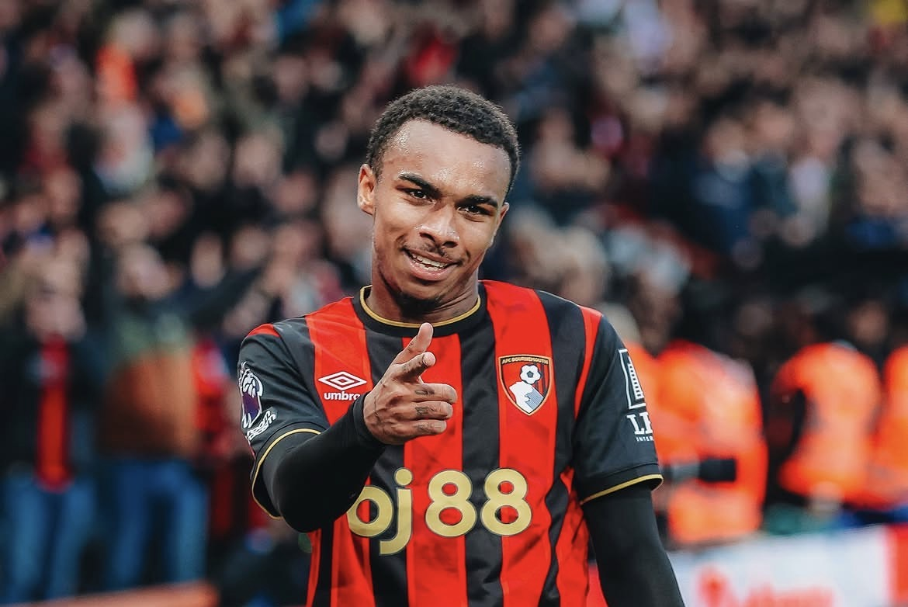
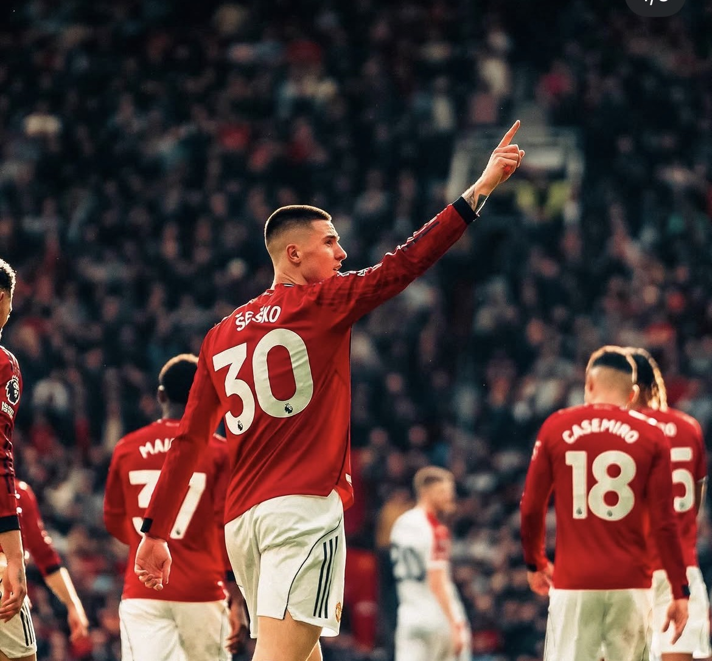
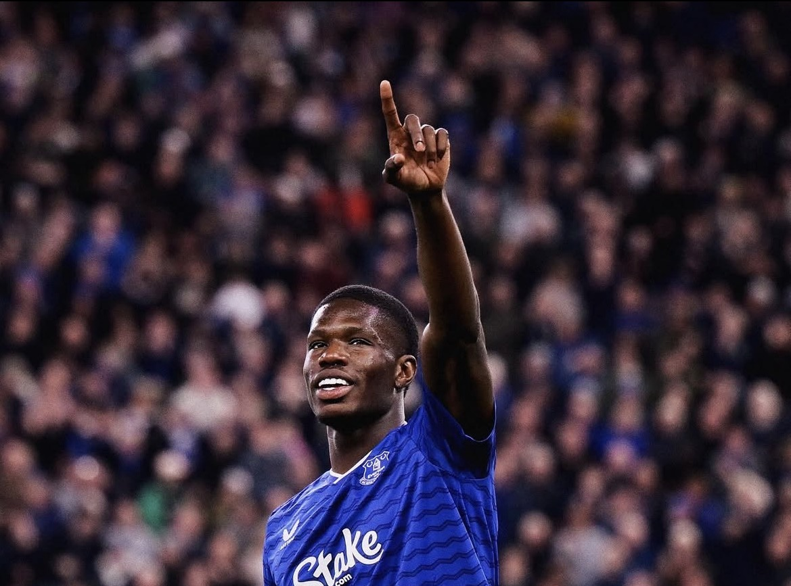

CFJunior Kroupi
所属: AFC Bournemoth/ 身長: 179cm
ボーンマスに所属するフランス世代別代表攻撃的MF。爆発的なスピードと高い得点感覚を武器に、10代でプレミアリーグにステップアップして大ブレイク。ビッグクラブが熱視線を送る、フランス前線の未来を担う超新星。
次世代を担うPLの至宝たち
圧倒的なフィジカルによる対人守備だけでなく、攻撃の起点となる高精度な展開力を備えた次世代のディフェンスリーダー

CF所属: AFC Bournemoth/ 身長: 179cm
ボーンマスに所属するフランス世代別代表攻撃的MF。爆発的なスピードと高い得点感覚を武器に、10代でプレミアリーグにステップアップして大ブレイク。ビッグクラブが熱視線を送る、フランス前線の未来を担う超新星。

CF所属: Manchester United/ 身長: 195cm
マンチェスター・ユナイテッド所属のスロベニア代表FW。195cmの巨躯と圧倒的なスピードを武器にゴールを量産する怪物ストライカー。空中戦の強さと高い足元の技術を兼ね備え、世界中が恐れる新世代の大型重戦車。
所属: Liverpool/ 身長: 190m
リヴァプール所属のフランス人FW。190cmの体躯を活かした高いキープ力と、抜群のスピードを兼ね備えた万能型ストライカー。フランクフルトでの大ブレイクを経て、プレミアでもその非凡な攻撃センスを証明している。
所属: Newcastle United/ 身長: 179cm
ニューカッスル所属のデンマーク代表FW。190cmを超える圧倒的なフィジカルと快速を併せ持つ大型重戦車。強烈な両足のキックと勝負強さを武器に、名門の最前線で特大の輝きを放つ新世代の怪物ストライカー。

CF所属: Everton/ 身長: 195cm
エヴァートンに所属するフランス出身の大型FW。195cmの恵まれた体格を活かした空中戦の強さと、高いキープ力を誇る前線の基準点。しなやかな機動力も併せ持ち、プレミアの舞台でも存在感を放つ期待のストライカー。